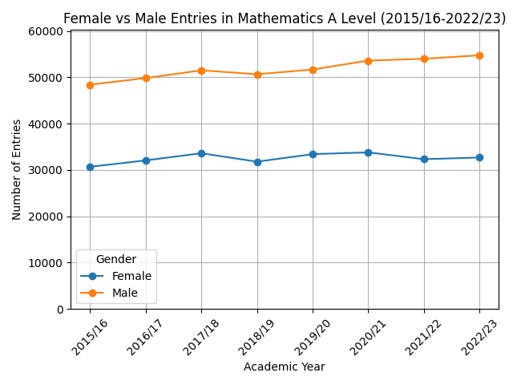
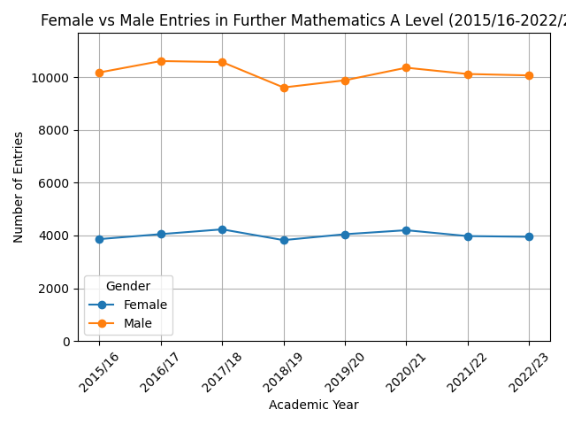
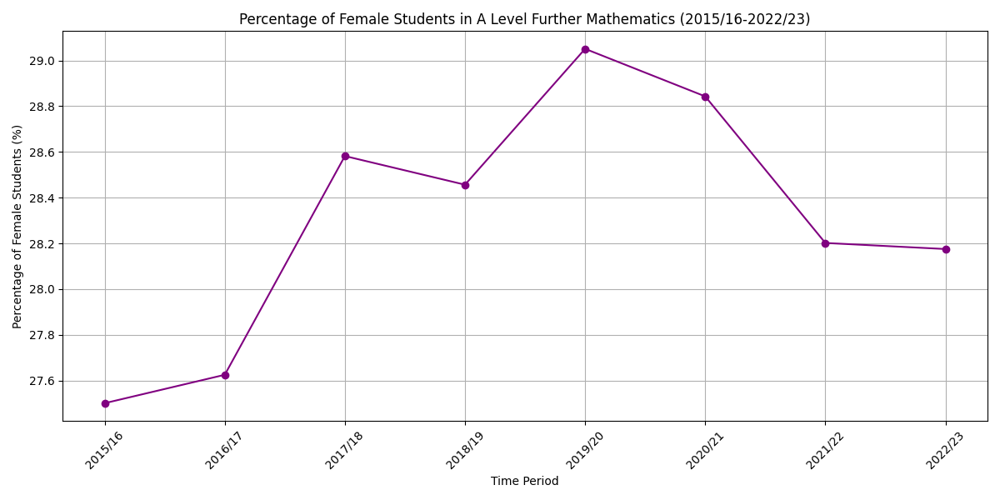

A Level Mathematics
This graph illustrates the male vs female entries in A Level Mathematics over the years. From this perspective, it looks like they rise and fall together - allowing us to track broader impacts e.g. government policy, how accessible the GCSE maths exam was the year before entry, etc.

This graph shows the percentage of female students choosing A Level Mathematics, as a percentage of the total number of students. This gives us a clearer understanding of how these broader changes impacted girls uptake of maths. For example, the difficult GCSE maths paper in June 2018 seems to have impacted girls' uptake of maths A level more than it effected boys', although they were both lower. At the same time, it is worth noting that we are now moving within just 2 percentage points over the course of these 8 academic years. This suggests a stability to the proportion of girls choosing A level maths.
A Level Further Mathematics
This graph displays the male vs female entries in A Level Further Mathematics. Again we can see the two groups broadly tracking together. We see the impact of the difficult GCSE exam in 2018.
This graph represents the percentage of female students choosing A Level Further Mathematics. We are moving within less than 2 percentage points over the 8 years, which is even more significant as the number of entries is lower in this subject. This indicates stability in the proportion of girls choosing A level further maths. We can see again that a difficult GCSE maths exam impacts girls' confidence in choosing A level further maths more than boys'.